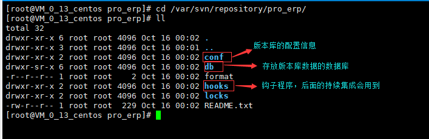

假设我们要做一个erp的项目，我们创建一个名称为pro_erp的版本库
首先我们在svn版本库的总目录（这里我们是/var/svn/repository目录）下创建pro_erp的文件夹：
mkdir /var/svn/repository/pro_erp
然后我们把pro_erp文件夹转化为svn的版本库：
svnadmin create /var/svn/repository/pro_erp
可以进入到pro_erp文件夹里面看到有一些存放svn信息的文件和目录
